1. Atração
Arquitetura, cenografia, volumetria, fila, fachada e ponto de curiosidade.
Um site para apresentar benchmarks de marcas, lógica de ativação em festivais e sugestões estratégicas do estande da Universidade Estácio.
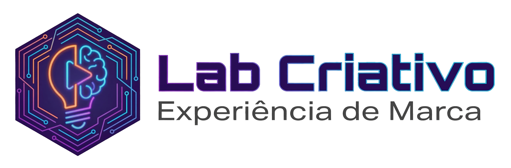
No Rock in Rio, a marca não disputa somente mídia. Ela disputa tempo de permanência, lembrança, compartilhamento social, utilidade percebida e repertório cultural. Por isso, a análise abaixo observa cinco lentes: presença física, utilidade, entretenimento, tecnologia e desdobramento em conteúdo.
Arquitetura, cenografia, volumetria, fila, fachada e ponto de curiosidade.
O que o visitante faz, toca, experimenta, cria, joga, canta ou leva embora.
Capacidade de virar foto, vídeo, UGC, cobertura de imprensa e memória social.
QR codes, app, cadastro, recompensa, CRM e continuidade após o evento.
Quando a experiência traduz valores da marca e não apenas distribui brinde.
O bloco abaixo reúne as marcas pedidas por você. Quando a marca aparece na listagem oficial atual do Rock in Rio 2026, ela é tratada como presença confirmada na página de patrocinadores. Quando a marca foi mapeada em 2024, mas não apareceu na página oficial atual consultada, ela entra como benchmark histórico de ativação para comparação.
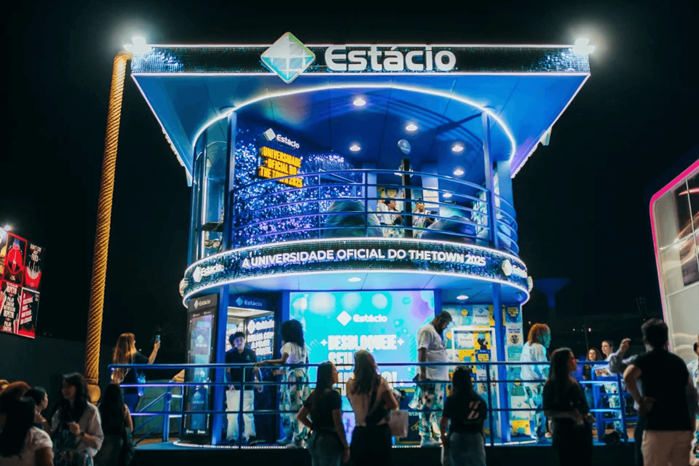
Educação transformada em experiência, carreira, creator economy e laboratório vivo.
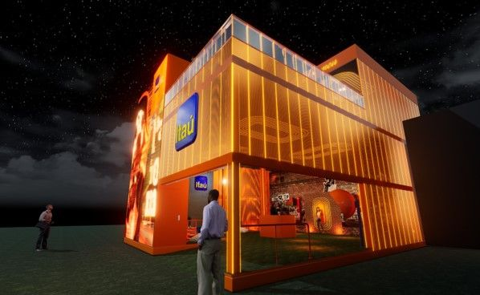
Marca com histórico de grandes estruturas proprietárias, brasilidade, benefícios e espaços de convivência.
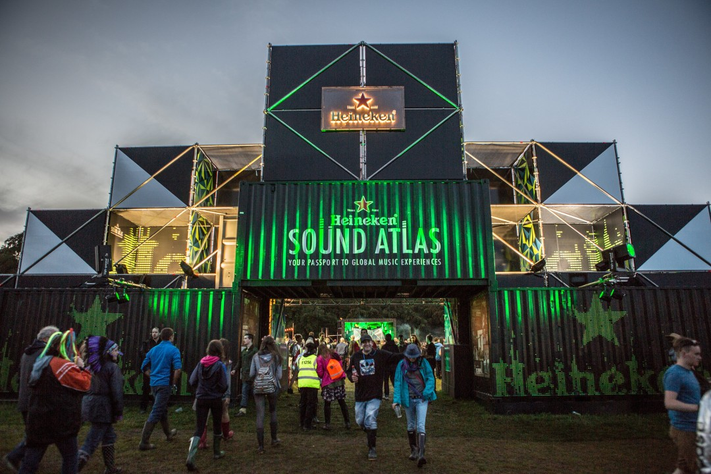
Experiência premium, música, noite, visualidade urbana e sensação de exclusividade.
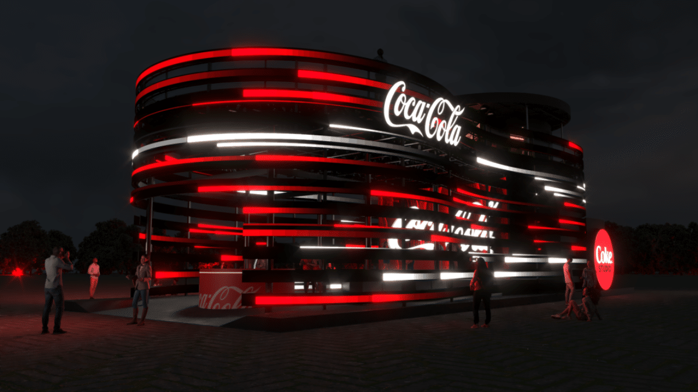
Conexão entre música, fandom, artistas e memorabilia compartilhável.
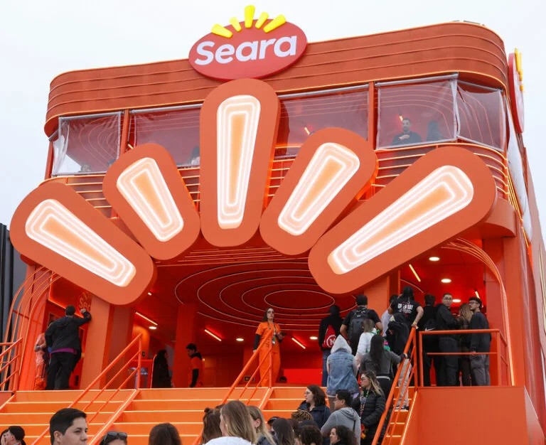
Alimento como utilidade, degustação e descanso energético durante a experiência.
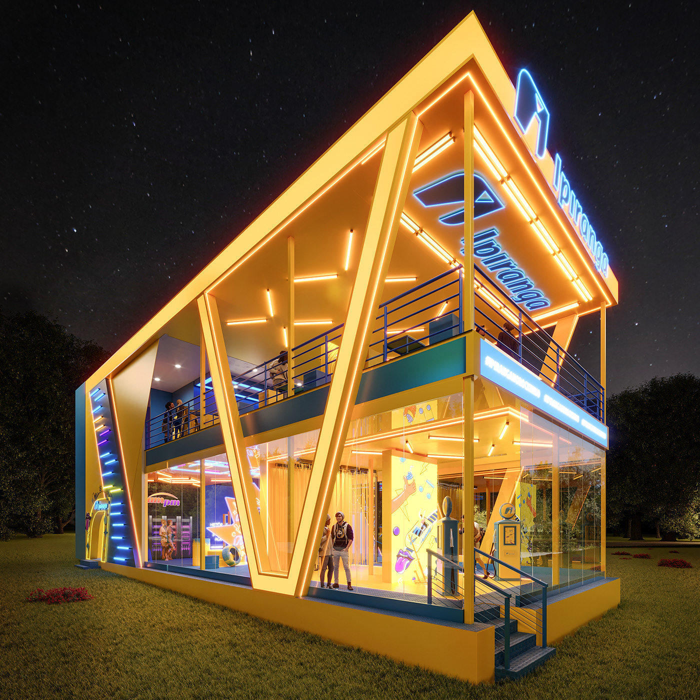
-Marca de conveniência e jornada, com potencial para descanso, recarga e utilidade urbana.
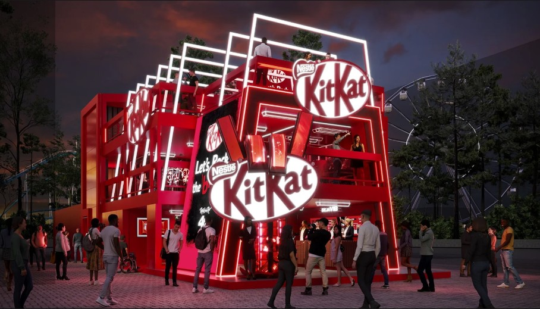
A lógica do break funciona muito bem em festival: pausa divertida, snack e conteúdo rápido.
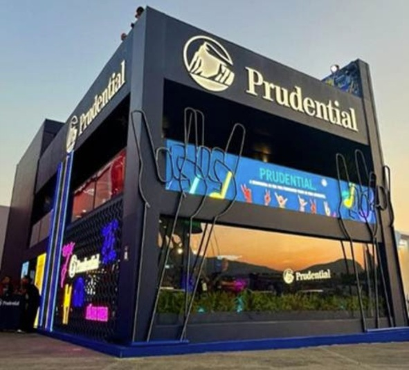
Proteção e futuro traduzidos em narrativa aspiracional, cuidado e legado.
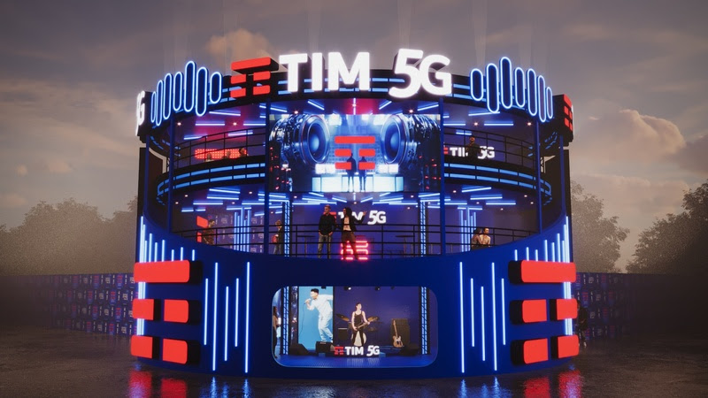
Conectividade convertida em experiência visível, interativa e demonstrável.
Sinestesia, fragrância, sensorialidade e discurso de impacto positivo.
Marca de atitude, desafio, ousadia e inclusão com forte vocação para games e competição.
Potencial de ativação orientado a emoção, placar, predição e adrenalina gamificada.
Serviço vira experiência quando reduz atrito, acelera pedido e cria conveniência percebida.
Moda, festival wear, personalização e visibilidade estética do público.
Automotivo ganha força quando vira ícone, mobilidade e objeto de desejo licenciável.
Para facilitar o uso no GitHub Pages sem depender de bancos externos, este pacote inclui duas ilustrações SVG originais. Elas funcionam como artes conceituais de apoio visual. Você pode depois substituir por fotos oficiais, prints autorizados ou imagens de press kit.
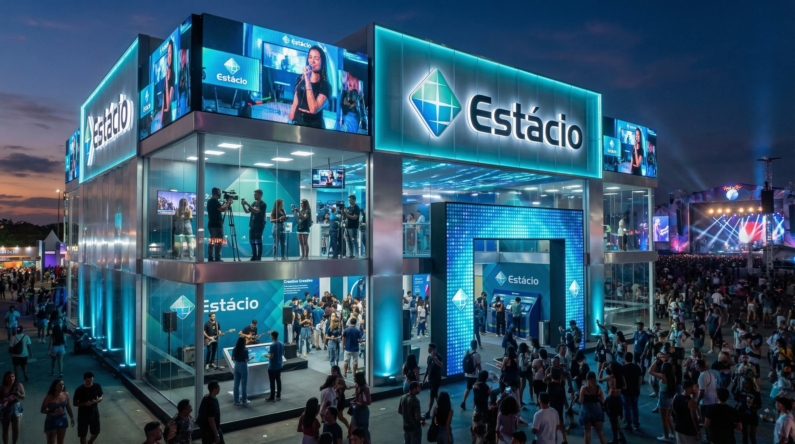
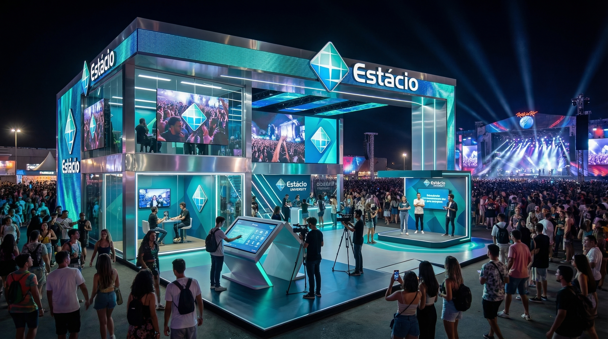
A melhor posição para a Estácio é atuar como uma marca-ponte entre juventude, criatividade, formação e futuro profissional. Em vez de um stand apenas promocional, o ideal é um ambiente que entregue utilidade, autoria e espetáculo.
Miniestúdio para gravar reels, shorts e entrevistas com edição rápida, teleprompter e templates visuais da marca.
Experiência interativa em telas e sensores mostrando carreiras em design, audiovisual, publicidade, jornalismo, games e produção.
O visitante responde a perguntas e recebe um pôster digital com seu perfil criativo e trilha de competências.
Battle de campanhas, naming, motion e criação visual com ranking em tempo real e premiações.
Projeções sincronizadas com música, cases de alunos e narrativas sobre inovação, cultura e educação.
Conteúdo ao vivo com professores, creators, ex-alunos e profissionais do mercado, gerando material para redes sociais.
Suba a pasta inteira para um repositório público no GitHub.
No repositório, vá em Settings → Pages → Deploy from branch.
Escolha a branch main e a pasta root.
O link ficará no formato https://seuusuario.github.io/rock-in-rio-brand-experience-advanced.
Recomendo manter esta seção no site para transparência metodológica. Você pode transformar em rodapé acadêmico, metodologia ou bibliografia web.